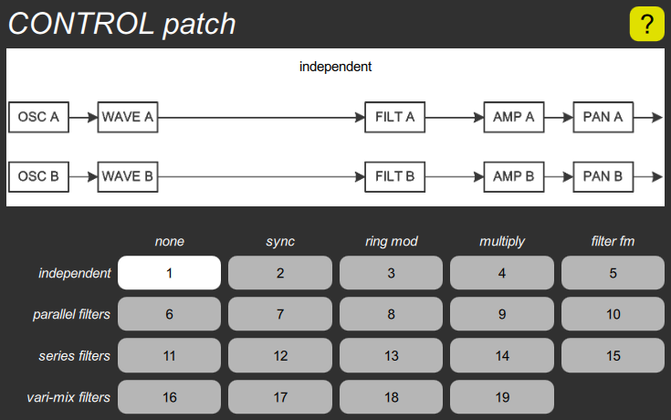

CONTROL patch cluster

This contains the single patch parameter, with a button for each choice, and a diagram that shows the arrangement of the sound processing modules for the current choice. They are arranged in a matrix, where the row represents the basic interconnection, and the column represents a special effect that modifies the interconnection. See the above link for more details.
Sounds are designed for a particular patch. While you can always change the patch parameter on an existing sound, it is likely to make it sound worse, not better, so it is primarily something that is chosen first when creating a new sound.
The default patch is the first one: independent.